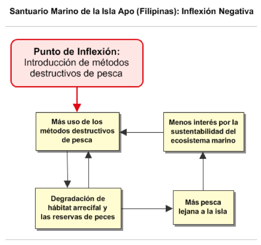
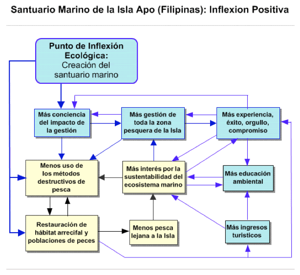
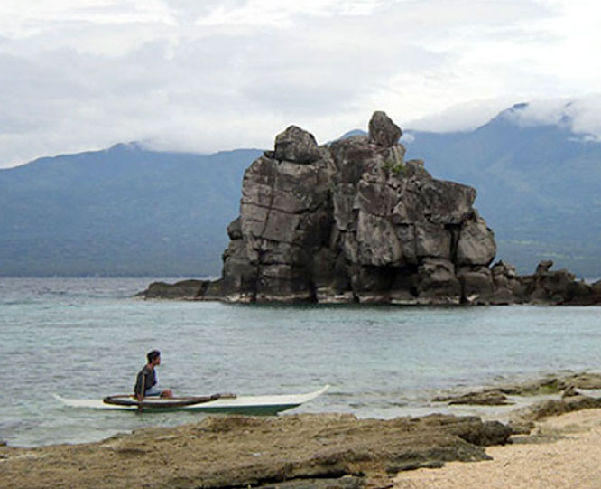
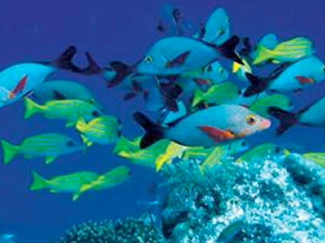
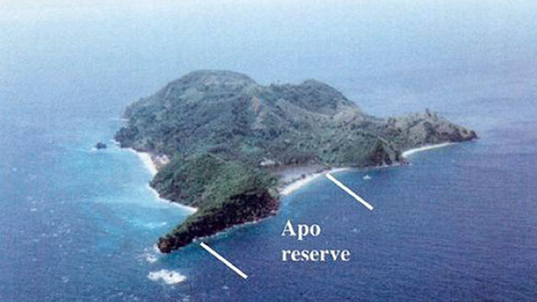
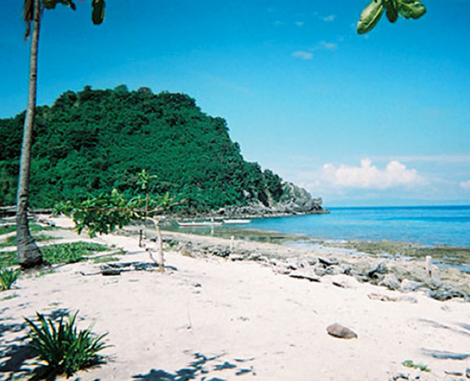
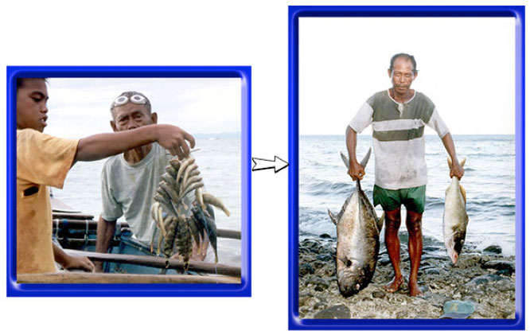
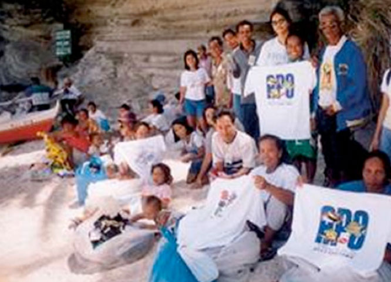
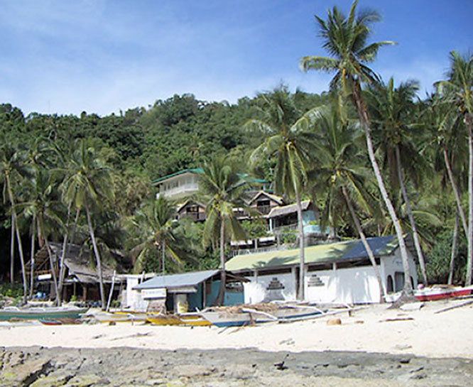
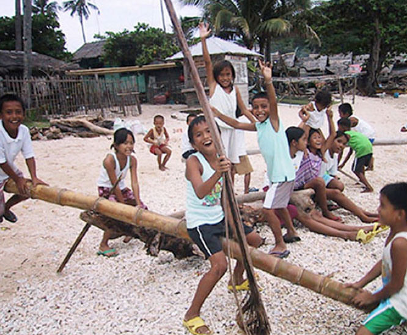

|
 |
 |
Puntos de
Inflexión Ecológica
- Cómo funcionan?
- Transformando círculos viciosos a círculos virtuosos
- Ingredientes para el éxito
- Elaboren sus propios Puntos de Inflexión Ecológica
Historias por Región
Historias por Tema
- Agricultura
- Agua y Cuencas
- Bosques
- Ecosistemas Urbanos
- Educación
- Energía
- Negocios
- Pesquerías
- Salud Pública
Videos Cortos
- Salvando un arrecife coral y una pesquería
(Filipinas) - Revitalizando vecindades urbanas con jardines comunitarios
(Nueva York) - Revirtiendo la deforestación tropical con bosques comunitarios
(Thailandia) - Rellenando aguas subterráneas con captación pluvial
(Rajastán, India) - Escapando la trampa de pesticidas
(India)
Explicando el Éxito
- Salvando un arrecife coral y una pesquería
(Filipinas) - Revitalizando vecindades urbanas con jardines comunitarios
(Nueva York) - Revirtiendo la deforestación tropical con bosques comunitarios
(Thailandia) - Rellenando aguas subterráneas con captación pluvial
(Rajastán, India) - Escapando la trampa de pesticidas
(India)

Ecología Humana: Presenta los principios de la ecología humana que sirven de fundamento a los Puntos de Inflexión Ecológica
Filipinas - El Santuario Marino de la Isla Apo: El Declive y Restauración de una Pesquería de Arrecife Coral
- Autor: Gerry Marten
- Asistencia en la visita al sitio y aportaciones editoriales: Ann Marten
- Materias educativas para este caso (Español) – Plan de estudios, narrativas, fotos, PowerPoint, ejercicios para estudiantes y notas para maestros
- Video de esta historia (8 minutos)
- Fotogalería de esta historia
- Esta historia se publicó en Puntos de Inflexión Ecológica: Un Nuevo Paradigma para Restaurar la Seguridad Ambiental (Journal of Policy Studies)
En el archipiélago Filipino, los pescadores costeños respondieron al deterioro en la pesca duplicando sus esfuerzos por capturarlos. La combinación del uso de dinamita, jornadas más largas y equipo más avanzado solo aceleró la desaparición de peces. Al borde de la crisis, un pequeño poblado pesquero decidió crear un santuario marino donde quedaba prohibida la pesca sobre un 10% de su zona pesquera arrecifal. Esta iniciativa comunitaria no solo detonó la restauración de la pesquería sino que rescató el codiciado estilo de vida de los aldeanos.
Apo es una isla pequeña (de 78 hectáreas) a 9 kilómetros de la costa de Negros en el archipiélago Filipino. La isla tiene 145 familias y una población de 710 habitantes. La mayoría de los hombres son pescadores. La principal zona de pesca son los 500 metros circundantes de arrecifes coralinos que se extienden hasta una profundidad de 60 metros. Los pescadores utilizan pequeñas canoas con estabilizadores que impulsan con remos, aunque algunos de los más jóvenes las han equipado con motores.
Hasta los 1960s, la Isla de Apo había tenido una pesquería sustentable con suficiente captura para mantener a los pescadores y sus familias. Los principales métodos de pesca eran ganchos, redes y trampas de bambú. Pero hace 50 años comenzaron algunos cambios que amenazaron drásticamente el futuro del ecosistema marino y la supervivencia de la comunidad isleña.
El Deterioro de la Pesquería
El problema comenzó con la introducción de cuatro métodos destructivos de pesca a las Filipinas:
- La pesca con dinamita, que comenzó a darse con explosivos que sobraron de la Segunda Guerra Mundial y cobró auge en los 1960s;
- El Muro-ami (del Japón) en que los peces son espantados hacia las redes al golpear el coral con piedras.
- El cianuro, introducido durante los 1970s para la pesca de peces de acuario. Ya no se pescan peces de acuario en la región, pero el cianuro persiste.
- Las redes de malla chica. El mercadeo mundial de las nuevas redes de nylon introdujo las redes de malla chica a la región en los 1970s.
Estos métodos son más eficaces que los métodos tradicionales Filipinos, pero dañan la sustentabilidad de la pesquería. No solo facilitan la sobrepesca y pesca de peces inmaduros, sino que dañan el hábitat coralino de los peces. El gobierno implementó leyes prohibiendo la pesca destructiva a principios de los 1980s. Sin embargo, la gran cantidad de islas y la extensión de las aguas costeras imposibilitaron la vigilancia efectiva por parte de los guardacostas y la policía nacional.
La introducción de los métodos destructivos de pesca detonó un círculo vicioso del deterioro de las poblaciones de peces y mayor uso de los métodos destructivos para compensar el deterioro en las condiciones de pesca. Los pescadores tenían que viajar cada vez más lejos de sus aldeas, trabajar jornadas más largas en busca de peces utilizando los métodos destructivos para lograr la máxima captura posible, mientras ignoraban la salud futura de la pesquería. Los daños al hábitat arrecifal ahora son extensos en gran parte de las Filipinas y las poblaciones de peces en las zonas más degradadas representan apenas entre el 5-10% de lo que eran hace 50 años. Los pescadores en algunas zonas pueden pescar tan solo uno o dos peces pequeños en todo un día, o quizá ninguno.
La acción comunitaria al rescate del ecosistema arrecifal
La Isla de Apo encontró una manera de escapar de esta espiral descendente. En 1974 el Dr. Ángel Alcalá, director del laboratorio marino de la Universidad Silliman y del municipio de Oslob en Cebú, estableció un pequeño santuario marino donde quedó prohibida la pesca, el primero de la región, en una isla inhabitada llamada Sumilon. En 1979 el Dr. Alcalá empezó a dialogar con los pescadores acerca de lo que sucedía al ecosistema arrecifal del cual dependían. Para entonces las poblaciones de peces en Apo habían deteriorado tanto que algunos pescadores viajaban hasta 10 km de la isla en busca de mejores condiciones pesqueras.
El Dr. Alcalá llevó a algunos de los pescadores a ver el santuario marino en la isla Sumilon, que para entonces estaba repleto de peces. Pudieron ver como el santuario servía de criadero para repoblar las áreas vecinas donde aún se pescaba, pero aún así los pescadores no estaban del todo convencidos. Los santuarios marinos no eran parte de la tradición pesquera de las Filipinas.
En 1982, tras tres años de dialogo entre el personal de la Universidad Silliman y los pescadores de la isla Apo, 14 familias decidieron establecer un santuario marino en su isla donde quedaría prohibida la pesca. Esta minoría de familias pudo hacerlo porque contaron con el apoyo del capitán barangay (líder local). Los pescadores seleccionaron un área de 450 metros de playa y extendieron el santuario 500 metros mar adentro- lo cual representó poco menos del 10% de la zona pesquera alrededor de la isla. El santuario tenía algunos corales saludables, pero pocos peces.
La protección del santuario no fue una carga excesiva para los habitantes. De hecho requería tan solo de una persona observando desde la orilla para garantizar que nadie pescara dentro del santuario, y esta función fue rotada entre las familias participantes. El hecho de que el ecosistema coralino aún mantenía mucha de su diversidad original permitió que la fuerza sanadora de la naturaleza regresara la salud al ecosistema y las poblaciones de peces dentro del santuario relativamente pronto. Para 1985 había un impresionante aumento en la abundancia y tamaño de los peces, y la “derrama” de peces del santuario a las zonas vecinas resultó en mejores capturas en la periferia del santuario.
Virtualmente todas las familias de la isla pasaron a apoyar el santuario, y el éxito con el santuario les motivó a pensar en cómo ciertas restricciones sobre toda la zona pesquera podrían incrementar las poblaciones de peces allí también. Con apoyo técnico de una organización sin fin de lucro dedicada a la gestión de recursos costeros, los pescadores establecieron un Comité de Gestión Marina. Cada que era necesario los representantes de cada familia isleña se reunían en la escuela primaria para buscar y lograr el consenso sobre decisiones clave, sin importar cuánto tardaban en hacerlo. Al final, los isleños decidieron implementar dos sencillas reglas para su zona pesquera; (1) prohibir la pesca destructiva y (2) permitir el acceso exclusivamente a los pescadores de la Isla de Apo. La regla que excluía la presencia de pescadores foráneos no tenía precedente y requirió de serias negociaciones con los niveles superiores del gobierno para asegurar la autoridad necesaria.
El gobierno de la isla estableció una “guardia marina” (bantay dagat) que consistió de aldeanos voluntarios para vigilar la zona pesquera- algo sencillo ya que la zona pesquera se extiende tan solo 500 metros mar adentro desde la orilla. Ya no era necesario vigilar el santuario en sí, porque todos aceptaron su estatus como zona en veda permanente. La tarea principal de la guardia marina hoy en día es vigilar las embarcaciones que llegan a su zona pesquera desde fuera. No les preocupan los pescadores de Apo porque la pesca sustentable se ha convertido en parte íntegra de la cultura isleña.
Cuando los pescadores abandonaron la pesca destructiva, regresaron a sus métodos tradicionales, que sabían eran efectivos y sustentables. El poder curativo de la naturaleza restauró al ecosistema y a las poblaciones de peces alrededor de la isla, justo como había sucedido dentro del santuario. La captura de peces por unidad de esfuerzo más que triplico para mediados de los 1990s, y los pescadores volvieron a pescar en casa. Sin embargo, la pesca total por pescador permaneció casi igual, ya que los pescadores respondieron al aumento en disponibilidad de peces reduciendo su esfuerzo para no pescar tanto. Unas cuantas horas de trabajo cada día les brindan suficiente alimento para sus familias e ingresos para sus necesidades. Si lo desean, los pescadores pueden utilizar su tiempo extra para otras actividades lucrativas como son el transporte entre la isla y tierra firme. La mayor razón para buscar ingresos adicionales es para financiar la educación de sus hijos.
Efectos secundarios que amarran la sustentabilidad
La restauración del ecosistema arrecifal de la isla ha resultado en beneficios adicionales. La impresionante abundancia y diversidad de peces y demás fauna marina (por ejemplo, tortugas y culebras marinas) alrededor de la isla ha atraído el turismo. A diario llegan botes de tours de buceo desde tierra firme, y la isla tiene una tienda de buceo y dos pequeños hoteles que emplean a lugareños. Algunas familias hospedan a turistas, mujeres cocinan para los hoteles y algunas mujeres venden playeras y pareos a turistas. El turismo ha estimulado la creación de asociaciones de mujeres y demás organizaciones comunitarias que ofrecen bienes y servicios a los turistas y mejoran el bienestar de la comunidad.
El gobierno de la isla recolecta una cuota por buceo, la cual ha sido utilizada para mejorar la escuela primaria, la recolección de basura, el abasto de agua y de electricidad. Los ingresos turísticos también han permitido a familias y “becas” (por parte de uno de los dueños de hotel) financiar la educación secundaria en tierra firme de más de la mitad de los niños isleños. Muchos continúan a la universidad, y algunos han estudiado gestión de ecosistemas marinos. Algunos graduados han regresado como profesionistas a la isla, por ejemplo como maestros de primaria, y contribuyen al desarrollo de los servicios de salud, gobierno y gestión ambiental. En general, el creciente número de profesionistas entre las familias isleñas ha incrementado la capacidad de la comunidad para enfrentar exitosamente retos futuros.
Al aumentar el turismo, creció la inquietud por el impacto del buceo sobre el ecosistema arrecifal. Afortunadamente, la experiencia previa en la gestión del santuario y de las zonas pesqueras preparó al gobierno isleño para responder de manera eficaz. Implementó restricciones sobre el número de turistas permitidos en el santuario para minimizar los daños al coral. Además, para evitar encuentros con pescadores, se prohíbe nadar a menos de 50 metros de actividades pesqueras, así como dentro de la principal zona pesquera.
La Isla de Apo ha servido como modelo para otras comunidades pesqueras. El líder del gobierno de Apo visita otros poblados para explicar el santuario, y Apo recibe a visitantes de otras aldeas que vienen a conocerlo. En 1994 el ejemplo de la Isla de Apo, y el hecho de que el Dr. Alcalá fuera Ministro de Recursos Naturales, motivó al gobierno Filipino a establecer una red nacional de santuarios marinos que actualmente incluye a más de 700 santuarios. No todos funcionan como debieran, pero muchos siguen el mismo camino de Apo. Mientras que la red nacional ha brindado algunos beneficios, también ha reducido la autonomía del gobierno local de Apo e incrementado la interferencia por parte del gobierno nacional en la gestión del santuario y en el uso de las cuotas cobradas a turistas.
En general en la isla se nota un ambiente de bienestar y satisfacción con su calidad de vida. Esto no es porque los habitantes sean ignorantes o indolentes. Valoran su calidad de vida y la calidad del ecosistema marino, y desean conservar ambos. Su experiencia con el santuario les ha demostrado una lección importante. Es necesario cambiar algunas cosas por medio de acciones comunitarias para mantener otras cosas igual que siempre. Están comprometidos con la sustentabilidad de su zona pesquera. Recientemente, con la asistencia de una organización civil local, los isleños comenzaron un exitoso programa de planificación familiar para garantizar que la población futura de la isla no exceda la capacidad de su pesquería.
El santuario marino es sagrado para los isleños de Apo. Dicen que salvó su ecosistema coralino, su pesquería y su estilo de vida tan querido. El santuario fue un Punto de Inflexión Ecológica – una “palanca” que revirtió el deterioro y detonó la restauración y sustentabilidad.
¿Qué nos dice la historia de la Isla Apo acerca de los Puntos de Inflexión Ecológica?
Podemos llegar a las siguientes conclusiones interconectadas acerca de los puntos de inflexión ecológica a partir de la historia de la Isla Apo:
El papel central de acciones catalíticas y circuitos de retroalimentación positiva mutuamente reforzadores. Los puntos de inflexión ecológica generan una reacción en cadena a través del sistema social y el ecosistema. Un pequeño cambio en cualquiera de éstos genera un cambio mayor en ambos. La inflexión positiva genera mejoras en los sistemas social y ecológico que se refuerzan uno a otro y redirigen a ambos del deterioro a la salud. La acción catalítica para la Isla Apo fue el establecimiento del santuario marino, el cual puso en marcha numerosos cambios ambientales y sociales. Lo más importante fue el hecho de que el éxito del santuario inspiró a los pescadores a desarrollar y dar fuerza a reglamentos de pesca en toda su zona pesquera. Cada éxito subsiguiente inspiró a los pescadores a mejorar aún más su esquema de gestión. El incremento en el número de peces fomentó el turismo, lo cual a su vez reforzó la necesidad de un prospero ecosistema marino que continuara atrayendo turistas. El turismo, la experiencia positiva de ejercer control sobre su propio destino, y su reconocimiento como comunidad modelo en la gestión pesquera motivaron numerosos cambios en la sociedad isleña, y pusieron en marcha circuitos de retroalimentaciones positivas adicionales en cuanto la infraestructura, educación y planificación familiar en la isla.
Los puntos de inflexión ecológica son eficientes porque movilizan a la naturaleza y a procesos sociales naturales a hacer el trabajo. El poco trabajo físico requerido para vigilar un santuario de 450 metros permitió a la naturaleza restaurar el santuario y subsiguientemente permitió a la naturaleza sanar el ecosistema marino entero de la zona pesquera de la isla. La historia de la Isla Apo no trata de un elaborado plan de desarrollo que depende de grandes cantidades de dinero y metas inalcanzables para ser exitoso. El punto de inflexión - el establecimiento del santuario - puso en marcha circuitos de retroalimentación a corto plazo en que la gente pronto pudo ver las consecuencias de sus acciones. De lo demás se encargaron los procesos económicos, sociales y gubernamentales usuales.
El papel central de la comunidad local. El santuario marino fue un punto de inflexión efectivo porque pertenecía a la comunidad. La mayoría de las cosas importantes que sucedieron tras el establecimiento del santuario, surgieron de acción comunitaria. El éxito habilitó a la comunidad al motivarla a buscar más puntos de inflexión para obtener mejores servicios de sus sistemas social y ambiental. Una vez en marcha a escala local, el proceso se extendió más allá de la isla para incluir tours de buceo provenientes de tierra firme, y para enviar a sus hijos a escuelas secundarias y universidades en tierra firme. Eventualmente llegó al gobierno nacional, el cual catalizó la difusión de la misma fórmula a otras comunidades pesqueras. Un fuerte liderazgo local en apoyo del santuario fue crítico para su éxito. La Isla Apo ha tenido la dicha de contar con el apoyo de fuertes capitanes barangay. En otras situaciones el liderazgo podría venir del sector civil.
El papel del estímulo y facilitación externos.Mientras que la acción a nivel local es un componente fundamental de los puntos de inflexión ecológica, la estimulación y facilitación proactiva desde fuera muchas veces es esencial para poner en marcha la acción comunitaria y detonar la cadena de efectos que redirige los cambios hacia mejor rumbo. Tres años de diálogo y motivación por parte de la Universidad Silliman fueron necesarios antes de que los pescadores locales decidieran probar la idea del santuario en 1982. La facilitación de una ONG Filipina también jugó un papel clave en el desarrollo de un programa de gestión para toda la zona pesquera de la isla en 1985. Estando los isleños muy motivados a planificar sus familias, una ONG Filipina con financiamiento internacional, les ayudó a hacerlo.
Los puntos de inflexión ecológica generan símbolos que refuerzan la inflexión. Crean espacios comunales, historias compartidas, u otros medios que simbolizan la "inflexión" e impulsan a la acción comunitaria a seguir adelante. El santuario es un sitio sagrado para los isleños de Apo. Forma el centro de una historia compartida de orgullo y éxito. Es impensable violar el santuario, o lo que representa.
Importancia del efecto demostrativo.La demostración estimula, sustenta y expande el proceso. Las catorce familias que comenzaron el santuario en la Isla Apo, no lo hubieran hecho sin ver el santuario en Isla Sumilon. No habrían persistido en vigilar el santuario, y no se les habrían unido el resto de las familias de la isla en gestionar toda la zona pesquera, si el santuario no hubiera dado resultados inmediatos. El éxito en Apo motivó a otras comunidades a intentar lo mismo.
Los puntos de inflexión son co-adaptativos. Ayudan al sistema social y al ecosistema a encajar el uno con el otro, y a funcionar sustentablemente en conjunto. Al progresar la experiencia de la Isla Apo, las percepciones, valores, conocimientos, tecnología, organización social e instituciones sociales cambiaron en maneras que fortalecían la sustentabilidad del ecosistema marino en cuanto a la pesca y el turismo. Simultáneamente el ecosistema marino cambió gracias a la acción humana y a los procesos ecológicos naturales que encajaron con el nuevo carácter del sistema social de la isla. Los cambios además mejoraron la coadaptación e integración de distintas partes del ecosistema marino. El santuario contribuyó a la salud ambiental de zonas pesqueras adyacentes, y la implementación de artes pesqueras sustentables en la zona pesquera mejoró la calidad del santuario. En conjunto el santuario y la zona pesquera funcionan de manera coadaptada y sustentable.
Los puntos de inflexión ecológica efectivos fortalecen la resiliencia. Podemos considerar la "resiliencia" como la habilidad para continuar funcionando dentro del mismo dominio de estabilidad, con los mismos procesos y estructuras mutuamente reforzadores, a pesar de disturbios intermitentes y a veces severos. Los puntos de inflexión ecológica contribuyen efectivamente a la sustentabilidad cuando mueven al sistema social-ecológico hacia un dominio de estabilidad que no solo es sustentable, sino también resiliente. Derivados del santuario, como son ingresos alternos, clases de ecología marina en la escuela, acceso a la educación superior, la formación de agrupaciones de mujeres, y el fortalecimiento general de la organización y solidaridad comunitaria, refuerzan la habilidad de la comunidad isleña de mantener una pesquería y un ecosistema marino sano y sustentable frente a futuros retos aún desconocidos.
Los puntos de inflexión ecológica utilizan la diversidad social y ambiental como un recurso. Los pescadores de Apo no hubieran pensado en un santuario si el personal de la Universidad Silliman no se los hubiera propuesto. La universidad fue fuente de una diversidad social que ayudó a los pescadores a considerar una mayor variedad de estrategias para enfrentar el deterioro de su pesquería. La diversidad ecológica del santuario marino sirvió para aumentar las reservas de peces en las zonas pesqueras, ayudando a mantener su salud ambiental y valor comercial. En la ausencia de un santuario las especies de peces, o de otros animales como las almejas gigantes que son más explotadas, pronto desaparecen de zonas pesqueras.
Los puntos de inflexión ecológica utilizan la memoria social y ambiental como un recurso. La Isla Apo pudo regresar a sus métodos tradicionales de pesca, como el anzuelo, la trampa y las redes de malla grande porque la memoria social dijo a los pescadores que estos métodos eran sustentables y los pescadores sabían utilizarlos efectivamente. La memoria ecológica fue responsable de la rapidez con la cual el ecosistema marino y las poblaciones de peces dentro del santuario respondieron a su protección. La fuerte adaptación entre las plantas y animales marinos regionales, y de ambas al ambiente local, les permitió ensamblar un ecosistema funcional y sustentable con rapidez.
Análisis con Respecto a los Circuitos de Retroalimentación
- Autor: Gerry Marten
Un Punto de Inflexión Ecológica es una palanca que revierte el deterioro ambiental, poniendo en marcha la restauración y la sustentabilidad. Los Puntos de Inflexión Ecológica hacen esto al transformar los circuitos de retroalimentación (círculos viciosos) responsables del deterioro ambiental en círculos virtuosos que promueven la restauración.
El punto de inflexión negativa ocurrió a lo largo de las Filipinas con la introducción de prácticas de pesca destructivas, como son la dinamita, el cianuro y las redes de malla chica después de la Segunda Guerra Mundial. Fueron puestas en marcha dos círculos viciosos entrelazados y mutuamente reforzadores.
- El uso de los métodos de pesca destructivos redujo las reservas de peces directamente debido a la sobrepesca. La pesca destructiva redujo estas reservas directamente al dañar el hábitat coralino. Con las reservas cada vez más mermadas, los pescadores se vieron obligados a utilizar los métodos de pesca destructivos para captar suficientes peces, degradando cada vez más el hábitat y reduciendo cada vez más las reservas.
- Al deteriorarse la pesca localmente, los pescadores viajaron cada vez más lejos para encontrar sitios donde aún podían pescar. Utilizaron los métodos destructivos sin moderación ya que estos sitios tan lejanos carecían de importancia alguna para ellos en cuanto a la pesca futura. La sustentabilidad de la pesca local también perdió importancia al trasladarse la pesca cada vez más lejos de la isla.
La espiral descendente de pesca destructiva, degradación de hábitat, reservas de peces cada vez menores, y la pesca cada vez más lejana a la isla continuó hasta que en muchos lugares la pesca se volvió prácticamente despreciable.

El punto de inflexión positiva para la Isla Apo fue la creación de un santuario marino que puso en marcha una cascada de cambios que revirtieron los círculos viciosos de la inflexión negativa. En el diagrama a continuación se muestran en amarillo los círculos viciosos transformados en círculos virtuosos. En azul y verde aparecen los círculos virtuosos adicionales que surgieron en asociación con el santuario marino.
- El santuario sirvió de criadero, contribuyendo directamente a la recuperación de las reservas de peces alrededor de la isla.
- El éxito con el santuario motivó a los pescadores a implementar una gestión sustentable en sus sitios pesqueros. Se puso en marcha un círculo virtuoso al incrementar las reservas de peces, y aumentarse la experiencia en la gestión, orgullo y compromiso con el santuario.
- Al mejorar la pesca alrededor de la isla, los pescadores dejaron de verse obligados a viajar tan lejos por su trabajo. Al pescar cerca de casa, donde tuvieron que vivir con las consecuencias de sus prácticas pesqueras, redoblaron su compromiso con la pesca sustentable.
Se "amarró" la sustentabilidad con la formación de círculos virtuosos adicionales:
El aumento en las poblaciones de peces y la mejora en la salud del ecosistema arrecifal alrededor de la isla atrajeron al turismo. Los ingresos del turismo fueron un motivo convincente para mantener sano al ecosistema marino. Aunque el turismo arrecifal es frecuentemente insostenible por los daños que causan los turistas al coral, la experiencia de los habitantes de la Isla Apo gestionando su santuario marino y su pesquería, les permitió manejar el turismo de manera que no causara daños al coral.
Los resultados positivos del santuario marino motivaron a la comunidad isleña a desarrollar un fuerte programa de ecología marina en su escuela primaria, para que la nueva generación valore el ecosistema marino de la isla y sepa cómo mantenerlo sano.
Los ingresos del turismo permitieron a los isleños enviar a sus hijos al bachillerato y la universidad en tierra firme. Algunos han estudiado ciencias marinas en postgrado. El elevado nivel educativo de la nueva generación de isleños les permitirá afrontar futuras amenazas inesperadas a su pesquería y ecosistema marino.
La mayor conciencia ecológica ha resultado en un programa de planificación familiar que pretende evitar un aumento en la población que sobrecargue a la pesquería isleña en el futuro.

Amarillo: Círculos viciosos convertidos en virtuosos por la inflexión positiva.
Azul: Nuevos círculos virtuosos generados por la inflexión positiva.
Ingredientes para el Éxito
¿Qué se necesita para revertir los círculos viciosos que promueven el deterioro ambiental? Básicamente una "palanca" de Puntos de Inflexión Ecológica consiste en una tecnología ambientalmente adecuada, es decir una "eco-tecnología", combinada con la organización social para implementarla efectivamente. Los "Ingredientes para el Éxito" son las características de la eco-tecnología y de la organización social que vemos en todas nuestras historias exitosas. Vea cómo los "Ingredientes para el Éxito" se manifiestan en esta historia.
Agradecimientos
Angel Alcala, Alan White, Laurie Raymundo, Aileen Maypa, y Mario Pascobello brindaron información sobre la historia de la Isla Apo. Portia Nillos apoyó de diversas maneras durante la visita de documentación a la Isla Apo.
Fotos (Crédito: Ann Marten y Angel Alcala)

Pescador de la Isla Apo

Peces sobre el arrecife de Apo

Ubicación de la reserva en la isla de Apo

Santuario marino visto desde la playa

Peces antes de la creación del santuario y diez años después

Playeras y souvenir de Apo

Zona turística de Apo (hotel, tienda de buceo, e iglesia)

Niños de Apo rumbo a un futuro sustentable
Informe original basado en la visita al sitio para documentar esta historia
- (Extracto de: Puntos de Inflexión Ecológica: Un Nuevo Paradigma para Restaurar la Seguridad Ambiental)
La Isla Apo nos brinda un caso de estudio relativamente sencillo pero muy ilustrativo para la exploración de cómo funcionan los puntos de inflexión ecológica en la práctica. Apo es una pequeña isla (78 hectáreas), a nueve kilómetros de la costa de Negros en las Filipinas. La isla tiene 145 familias y una población residente de 710 personas. Casi todos los hombres de la isla son pescadores. La principal zona de pesca es en la zona que rodea la isla a una distancia aproximada de 500 metros, un área con extensos arrecifes coralinos y con una profundidad que alcanza los 60 metros. Los pescadores utilizan pequeñas canoas de remo, aunque algunos pescadores (particularmente los jóvenes) tienen motores en sus canoas. Las principales artes de pesca son de línea y anzuelo, redes, y trampas de bambú.
La "inflexión negativa" de la Isla Apo comenzó hace aproximadamente 40 años. Antes, la pesquería era sana y sustentable, proveyendo ampliamente a los pescadores y sus familias. Durante los años posteriores a la Segunda Guerra Mundial, la explosión demográfica y el aumento en la presión pesquera aumentaron la vulnerabilidad a la pesca insostenible. La "inflexión negativa" vino con la introducción de cuatro métodos de pesca a las Filipinas:
- La pesca con dinamita, que comenzó con explosivos sobrantes de la Segunda Guerra Mundial, y cobró fuerza en los 1960s;
- El Muro-ami (del Japón). Los peces son espantados hacia las redes al golpear el coral con piedras.
- El cianuro, introducido durante los 1970s para el comercio de peces de acuario. Ya no se capturan peces de acuario en la región, pero persiste el cianuro.
- Redes de malla chica. El mercadeo mundial de las nuevas redes de nylon introdujo las redes de malla chica a la región en los 1970s.
La dinamita, el cianuro, el muro-ami, y las redes de malla chica son más eficaces que los métodos tradicionales de los Filipinos, pero son gravemente dañinos a la sustentabilidad de la pesquería. Además de facilitar la sobrepesca y la captura de peces inmaduros, dañan el hábitat de los peces. Estos métodos han sido ilegales desde los 1980s. La Guarda Costa Filipina y la Policía Nacional son responsables de hacer cumplir las reglas de pesca, pero las extensiones masivas bajo su jurisdicción les ha hecho virtualmente imposible a estas agencias mitigar la pesca destructiva.
La introducción de los métodos destructivos de pesca puso en marcha un círculo vicioso de reservas pesqueras a la baja y uso de métodos destructivos a la alza para compensar el deterioro en las condiciones pesqueras. El daño al hábitat arrecifal es ahora muy extenso en gran parte de las Filipinas, y las reservas de peces en las zonas más degradadas representan el 5-10% de lo que eran hace 50 años. Aunque la captura en zonas dañadas no dan para mantener a un pescador de tiempo completo, la pesquería continúa deprimida debido al gran número de pescadores, muchos de ellos de medio-tiempo y muchos de ellos que utilizan métodos ilegales de pesca por considerarlos la única manera práctica de capturar peces bajo esas condiciones. El problema es amplificado por la incursión ilegal de embarcaciones mayores de pesca comercial con equipo más sofisticado cuando la vigilancia es ligera y las condiciones cercanas a la costa son favorables a dichas incursiones.
El preámbulo a la inflexión positiva para la Isla Apo comenzó en 1974, cuando el Dr. Angel Alcala (Director del laboratorio marino en la Universidad Silliman de Ciudad Dumaguete) y el municipio de Oslob (Cebú) iniciaron un pequeño santuario marino, el primero en la región, en la isla despoblada de Sumilón (a 50 Km. de Apo). El Dr. Alcala y algunos de sus colegas en la Universidad Silliman visitaron la Isla Apo en 1979 para explicar como un santuario podría revertir la degradación de su pesquería, un deterioro que ya era obvio para todos. Para entonces las reservas de peces en las zonas de pesca de la Isla Apo habían disminuido tanto que los pescadores pasaban mucho de su tiempo viajando hasta 10 Km. de distancia de la isla en busca de condiciones más favorables.
El Dr. Alcala llevó a algunos pescadores a ver el santuario marino de la Isla Sumilon, en el que abundaban los peces. Pudieron ver como el santuario podría servir de criadero para las zonas adyacentes, pero no se convencieron del todo. Los santuarios marinos no son parte de la tradición pesquera Filipina. Tras tres años de diálogo entre personal de la Universidad Silliman y pescadores de la Isla Apo, 14 familias decidieron establecer un santuario de cero-pesca en la Isla. La minoría de familias pudo hacerlo porque el capitán barangay (líder del gobierno local) apoyó la idea.
La inflexión positiva para la Isla Apo se dio con la fundación del santuario marino en 1982. Los pescadores seleccionaron como santuario a un área a lo largo de 450 metros de litoral y la extendieron 500 metros mar adentro - poco menos del 10% de la zona de pesca de la Isla. El santuario tenía coral de buena calidad, pero pocos peces. Requería tan solo a una persona de guardia en la playa para garantizar que nadie pescara en el santuario. El cargo de guardia se rotó entre las familias participantes.
Tanto el número como el tamaño de los peces comenzaron a aumentar dentro del santuario y se "derramaron" al ecosistema adyacente, lo cual incrementó la captura en la periferia, eventualmente hasta una distancia de varios cientos de metros. En 1985 todas las familias de la isla decidieron apoyar el santuario y de darle validez legal a través del gobierno municipal.
Cuando los pescadores vieron lo que sucedía dentro y alrededor del santuario, concluyeron que reglamentando la pesca sobre todas las zonas pesqueras de la isla aumentaría las reservas en toda el área. Con apoyo técnico de una ONG especializada en gestión de recursos costeros, los pescadores implementaron un Comité de Gestión Marina y formularon reglamentos contra la pesca destructiva y la incursión de pescadores ajenos a la zona. Establecieron una "guardia marina" local (bantay dagat) consistente de aldeanos voluntarios para patrullar la zona. Ya no fue necesario vigilar el santuario en sí, porque todos aceptaron su status como zona de veda. La tarea principal de los guardias hoy en día es revisar las embarcaciones que entran en su zona pesquera. No necesitan preocuparse por los pescadores de Apo, porque la pesca sustentable se convertido en parte integral de la cultura de la isla.
Aunque los datos disponibles no permiten comparaciones precisas de las reserves actuales de peces en la Isla Apo con las reservas al momento que se creó el santuario, los datos sí indican que en general la medida de captura-por-esfuerzo se triplicó para mediados de los 1990s y no ha aumentado significativamente desde entonces. Sin embargo, los peces más grandes y de mayor valor comercial han aumentado más lentamente y continúan aumentando. Esto es confirmado por la impresión subjetiva de los mismos pescadores (Russ et al. 2004).
Curiosamente, la captura total de los pescadores isleños es más o menos la misma que hace 23 años, cuando se dio inicio al santuario Esto se debe a que los pescadores han respondido al aumento en las reservas reduciendo sus esfuerzos, en vez de capturando más peces. Los pescadores ya no tienen que viajar largas distancias para encontrar peces en otros lugares. La pesca es bastante buena alrededor de la misma isla. Unas cuantas horas de trabajo por día proveen a la familia de alimento e ingresos suficientes para sus necesidades. Los pescadores antes trabajaban largas horas. Ahora disfrutan su tiempo libre. Si así lo desean, pueden aprovechan algo de su tiempo libre para otras actividades económicas, como el transporte de mercancía y personas entre la isla y tierra firma. La razón primordial para buscar ingresos adicionales es para financiar la educación superior de sus hijos.
La impresionante abundancia y diversidad de peces y demás animales marinos (por ejemplo, tortugas y serpientes marinas) alrededor de la isla ha atraído al turismo de arrecifes (Cadiz and Calumpong 2000). La isla tiene dos pequeños hoteles y una tienda de buceo, los cuales emplean a docenas de residentes. Además, vienen embarcaciones de buceo desde tierra firme cada día. Algunas familias rentan cuartos a turistas, y algunas mujeres tienen empleos turísticos, como cocineras para los hoteles o vendiendo playeras. El gobierno de la isla recolecta una cuota por buceo o snorkel, la cual se ha utilizado para comprar un generador de diesel que abastece de electricidad a cada casa en la isla durante la noche. Las cuotas turísticas también han financiado mejoras significativas en la escuela primaria, la recolección de basura para su disposición en un relleno sanitario en tierra firme, y mejoras en el abasto de agua. Con apoyo de la Universidad Silliman, la escuela primaria ha desarrollado un currículo de ciencias ambientales que ofrece información exhaustiva sobre el ecosistema marino de la isla.
El turismo también ha generado ingresos familiares y becas (de parte de uno de los hoteleros) para que más de la mitad de los niños isleños atiendan la escuela secundaria en tierra firme. Y muchos continúan con la universidad. La mayoría de los graduados de la secundaria regresan a vivir en la isla, donde los hombres trabajan como pescadores. Sin embargo, casi todos los graduados universitarios y algunos de los graduados de secundaria se quedan en tierra firme con empleos que les permiten enviar dinero a sus familias en la isla. Algunos pocos graduados universitarios regresan como profesionistas a la isla, por ejemplo como maestros, y algunos aspiran a regresar para contribuir a los servicios de salud, gobierno o gestión ambiental. Las remesas de los familiares que no viven en la isla son utilizadas principalmente para infraestructura privada, como mejoras a la vivienda. Muchos de los que no viven en la isla, viven lo suficientemente cerca para permitirles visitas frecuentes.
La Isla Apo ha servido de modelo a comunidades pesqueras en Negros y Cebu. El jefe de gobierno de la Isla Apo visita otras aldeas pesqueras para explicar el santuario, y personas de otras aldeas visitan a Apo para ver de qué se trata. En 1994 el ejemplo de la Isla Apo, y el hecho de que el Dr. Alcala fuera Ministro de Recursos Naturales, motivaron al gobierno de las Filipinas a establecer un programa nacional de santuarios marinos que ahora incluye aproximadamente 400 santuarios a nivel nacional. No todos funcionan como debieran, pero muchos parecen seguir el ejemplo de Apo.
La historia de la Isla Apo no es un cuento de hadas. Yo visité Apo, platiqué con sus residentes, y todos me dijeron lo mismo. Creen firmemente que el santuario salvó a su isla. La historia está documentada por publicaciones científicas que incluyen 25 años de monitoreo de la pesquería isleña y las condiciones ecológicas del santuario. Las siguientes publicaciones ofrecen una reseña: Russ y Alcala (1996), Russ y Alcala (1998), Russ y Alcala (1999), Alcala (2001, p. 73-84), Maypa et al. (2002), Russ y Alcala (2004), Russ et al. (2004), Alcala et al. (2005), Raymundo y White (2005).
La Isla Apo no es perfecta. Existen conflictos personales, facciones políticas, quejas sobre el gobierno, y tantas otras cosas típicas de cualquier sociedad humana. La gente de la isla no es particularmente próspera. Las casas no tienen agua de llave. Los residentes deben recolectar agua de grifos estratégicamente colocados alrededor de la aldea. Los servicios médicos son limitados, aunque pueden encontrarse doctores en tierra firma a media hora en bote. Muchos sienten que los beneficios económicos del turismo, acaparados principalmente por los hoteleros, debieran ser distribuidos más equitativamente. Mientras que la participación en el programa nacional de santuarios marinos ha reforzado la categoría del santuario de la Isla Apo y aportado algunos beneficios de pertenecer a la red, también implica que los pescadores isleños ya no tienen control absoluto sobre la gestión del santuario, o de los fondos provenientes de las cuotas por buceo y snorkel.
Al incrementar el turismo, ha aumentado la inquietud sobre el impacto del buceo y snorkel al santuario y la pesquería (Reboton and Calumpong 2003). El gobierno de la isla ha instituido restricciones sobre el número de turistas en el santuario para limitar el daño a los corales. Los pescadores se han quejado que los buzos espantan a los peces y a veces dañan trampas o liberan a peces de las trampas. Consecuentemente, los buzos no son permitidos a menos de 50 metros de actividades pesqueras y no se permiten buzos en la principal zona pesquera de la isla. Algunos isleños no están satisfechos con la vigilancia que se da a estas restricciones, y el diálogo sobre cómo proteger el ecosistema marino del turismo, continúa.
Pero sobre todo, hay una atmósfera palpable de bienestar y satisfacción con la calidad de vida en la isla. Esto no es porque los isleños sean ignorantes o indolentes. Valoran su calidad de vida y la calidad de su ecosistema marino, y desean mantenerlo así. Su experiencia con el santuario les ha enseñado una importante lección. Es necesario cambiar algunas cosas con acciones comunitarias para que las cosas más importantes se mantengan igual.
Hace veinte años los isleños cambiaron la manera en que gestionaban su pesca. Ahora necesitan hacer algunos cambios al tamaño de sus familias. Todos acuerdan que el aumento poblacional es una seria amenaza para el futuro de la isla. Hace dos años se inició un programa de planificación familiar, y en el pequeño centro comunitario de planificación familiar ofrecen anticonceptivos. La mayoría de las familias los usan. Los jóvenes, incluso los niños de primaria, expresan su interés por una familia pequeña. La inmigración de personas que no sean descendientes de familias de la Isla Apo, está prohibida.
El santuario ha cambiado la manera en que los isleños ven el mundo. Los pescadores dicen que antes del santuario su estrategia era pescar con métodos destructivos en un lugar hasta agotarlo, y después buscar otro aún no degradado para hacer lo mismo. Ahora están comprometidos con pescar en el mismo lugar, alrededor de su isla, de manera sustentable. Antes, esperaban que las agencias de gobierno encargadas de regular la pesca, lo hicieran, y se quejaban cuando no lo hacían. Ahora son ellos quienes se encargan de hacer cumplir sus propias reglas. Esta iniciativa se ha extendido al desarrollo de la infraestructura en la isla, y a garantizar que sus hijos obtengan la educación que necesiten para un futuro digno. El organizarse para gestionar la pesquería ha fomentado la organización comunitaria de otros tipos - particularmente entre mujeres. La isla tiene una unión crediticia de mujeres y una asociación femenil que vende suvenires a turistas.
Referencias
- Alcala, A. C. 2001. Marine reserves in the Philippines: historical development, effects and influence on marine conservation policy. Bookmark, Makati City, Philippines.
- Cadiz, P. L., and H. P. Calumpong. 2000. Analysis of revenues from ecotourism in Apo Island, Negros Oriental, Philippines. Proceedings of 9th International Coral Reef Symposium (Bali, Indonesia, 23-27 October 2000), Volume 2:771-774.
- Liberty's Community Based Lodge and Paul's Community Diving School, Apo Island.
- Maypa, A.P., G. R. Russ, A. C. Alcala, and H. P. Calumpong. 2002. Long-term trends in yield and catch rates of the coral reef fishery at Apo Island, central Philippines. Marine Freshwater Research 53:207-213.
- Raymundo, L. J., and A. P. Maypa. 2003. Chapter 14. Apo Island marine sanctuary, Dauin, Negros Oriental. Pages 61-65 in Philippine coral reefs through time. The Marine Science Institute, University of the Philippines, Diliman, Philippines.
- Raymundo, L. J., and A. T. White. 2005. 50 years of scientific contributions of the Apo Island experience: a review. Silliman Journal (50th Anniversary Issue), Silliman University, Dumaguete, Philippines.
- Reboton, C., and H. P. Calumpong. 2003. Coral damage caused by divers/snorkelers in Apo Island marine sanctuary, Dauin, Negros Oriental, Philippines. Philippine Scientist 40:177-190.
- Russ, G. R., and A. C. Alcala. 1996. Do marine reserves export adult fish biomass? Evidence from Apo Island, central Philippines. Marine Ecology Progress Series 132:1-9.
- Russ, G. R., A. C. Alcala. 1998. Natural fishing experiments in marine reserves 1983-1993: community and tropic responses. Coral Reefs 17:383-397.
- Russ, G. R., and A. C. Alcala. 1999. Management histories of Sumilon and Apo marine reserves, Philippines, and their influence on national marine resource policy. Coral Reefs 18:307-319.
- Russ, G. R., and A. C. Alcala. 2004. Marine reserves: long-term protection is required for full recovery of predatory fish populations. Oecologia 138:622-627.
- Russ, G. R., A. C. Alcala, A.P. Maypa, H. P. Calumpong, and A. T. White. 2004. Marine reserve benefits local fisheries. Ecological Applications 14:597-606.
Este sitio web contiene materia traducida del sitio web www.ecotippingpoints.org.
Traducción: David Nuñez. Redacción: Gerry Marten